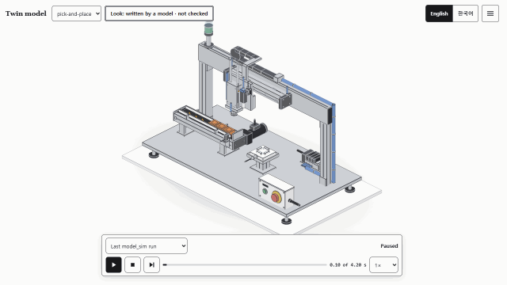
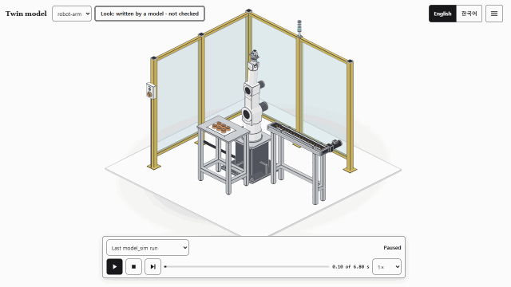

What you can make만들 수 있는 것
Five models in examples/, each with its sheet, model, simulation input and picture. They are design examples: every size, time and speed is a guess for the example, not a catalogue value, and no model is claimed to match a real machine.
examples/의 모델 다섯 개입니다. 모델마다 원리 시트, 모델, 시뮬레이션 입력, 그림이 있습니다. 모두 설계 예시라서 치수와 시간, 속도는 예시를 위해 정한 추정값이며 카탈로그 값이 아니고 어느 모델도 실제 설비와 같다고 주장하지 않습니다.
-

Pneumatic pick and place공압 픽앤플레이스
Gantry with a rodless X cylinder, a guided Z cylinder and a vacuum pad; infeed conveyor, nest, valve terminal. 14 devices.
로드리스 X 실린더, 가이드 Z 실린더, 흡착 패드를 단 갠트리와 공급 컨베이어, 지그, 밸브 매니폴드. 장치 14개.
Sim: pick 960 ms, place 2600 ms, back 3740 ms
시뮬레이션: 집기 960 ms, 놓기 2600 ms, 복귀 3740 ms
examples/pick-and-place -

Ball-screw servo axis볼나사 서보 축
Servo motor, coupling, ball screw with 10 mm lead, carriage on two rails, cable chain, home and limit switches. 5 devices.
서보 모터, 커플링, 리드 10 mm 볼나사, 레일 두 줄 위의 캐리지, 케이블 체인, 원점·리밋 스위치. 장치 5개.
Sim: targets 300, 150, 0 mm; busy ends at 1500, 2600, 3600 ms
시뮬레이션: 목표 300, 150, 0 mm, busy는 1500, 2600, 3600 ms에 꺼짐
examples/ball-screw-axis -

Eight-station index table8스테이션 인덱스 테이블
Dial on a cam indexer with a geared motor, eight nests with parts, press cylinder on a column, part sensor. 8 devices.
기어드 모터가 달린 캠 인덱서 위의 다이얼, 부품이 든 지그 8개, 기둥에 단 압입 실린더, 부품 센서. 장치 8개.
Sim: in-position at 640, 2340, 4040 ms; press down at 1050, 2750, 4450 ms
시뮬레이션: 인포지션 640, 2340, 4040 ms, 압입 1050, 2750, 4450 ms
examples/index-table -

Robot cell로봇 셀
Six-axis arm (preset
robot_6r) on a pedestal, vacuum tool, fixture table, outfeed belt, fence. 11 devices.받침대 위 6축 로봇(프리셋
robot_6r), 흡착 툴, 지그 테이블, 배출 벨트, 펜스. 장치 11개.Sim: pick 2900 ms, place on the belt 4950 ms, home 6400 ms
시뮬레이션: 집기 2900 ms, 벨트에 놓기 4950 ms, 원점 6400 ms
examples/robot-arm -

Cam lifter캠 리프터
Pear cam with a roller follower (27-point lift table), guided lift plate, geared motor, up, down and home switches. 4 devices.
롤러 종동절이 붙은 배 모양 캠(27점 승강 표), 가이드 승강판, 기어드 모터, 상승·하강·원점 스위치. 장치 4개.
Sim: up switch 1540 to 1670 ms, home again at 3090 ms
시뮬레이션: 상승 스위치 1540~1670 ms, 3090 ms에 다시 원점
examples/cam-lifter


Replay a cycle in 3D3D로 한 사이클 돌려 보기
One recorded simulation cycle, drawn by the same renderer as the program's 3D page. Drag to turn the view; pinch or scroll to zoom. The code and the data load only when you press the button.
기록해 둔 시뮬레이션 한 사이클을 프로그램의 3D 화면과 같은 렌더러로 그립니다. 끌면 시점이 돌아가고 두 손가락이나 휠로 확대합니다. 코드와 자료는 버튼을 눌러야 받습니다.
Machine kinds in the catalog카탈로그의 기계 종류
The 27 kinds and 4 presets that model_catalog returns, in groups. A machine that no kind fits is built from primitives.
model_catalog가 돌려주는 종류 27개와 프리셋 4개를 묶어 보였습니다. 맞는 종류가 없는 기계는 기본 요소로 짭니다.
namekind종류namepreset (expands to joints, couplings, drivers and sensors)프리셋(관절, 연동, 구동기, 센서로 펼쳐짐)Cylinders and rotary actuators실린더와 로터리 액추에이터
cylinder_doublecylinder_singlerotary_actuatorConveyors, motors and pumps컨베이어, 모터, 펌프
conveyormotorpumpServo axis서보 축
servo_axisservo_screwIndex table인덱스 테이블
index_tableindex_tableRobot arm로봇 팔
robot_armrobot_6rCams and other mechanisms from primitives캠과 그 밖의 기구(기본 요소로)
machinesolidwheeled_baseA cam or a linkage is a coupling
table; a screw, a rack or gears is a couplingratio.캠이나 링크는 연동
table로, 나사, 랙, 기어는 연동ratio로 적습니다.Grippers and vacuum pads그리퍼와 흡착 패드
grippervacuum_padSensors센서
photo_sensorprox_sensorreed_sensorzone_sensorlevel_sensorLamps, buttons and switches램프, 버튼, 스위치
lamptower_lightbuzzerbuttonselectorestopParts and tanks공작물과 탱크
part_sourcepart_sinktank
What you can do with it이것으로 할 수 있는 일
Get a 3D model of a machine기계의 3D 모델 얻기
Describe the machine in words or attach a photo. The AI client writes the model with the skill; the server checks it and draws it on the 3D page.
기계를 말로 설명하거나 사진을 붙이면 AI 클라이언트가 스킬을 따라 모델을 쓰고 서버는 그 모델을 검사해서 3D 화면에 그립니다.
Play one cycle한 사이클 돌려 보기
Put events on pins and run them with
model_sim. The result says when each sensor turns on, which joint moves when, and what happens to each part.핀에 이벤트를 넣어
model_sim으로 돌립니다. 결과를 보면 센서가 켜지는 시각, 관절이 움직이는 때, 부품마다 일어난 일을 알 수 있습니다.See the motion before you build만들기 전에 움직임 보기
Draw the motion and the order of the steps before you buy or build parts. Sizes and times stay guesses until someone measures them.
부품을 사거나 만들기 전에 움직임과 동작 순서를 그려 봅니다. 치수와 시간은 누가 재기 전까지 추정값입니다.
Explain or teach a machine기계를 설명하고 가르치기
Play the run on the 3D page while you explain it, or let the client get pictures with
model_renderfrom six views.3D 화면에서 실행을 재생하며 설명하거나, 클라이언트가
model_render로 여섯 방향에서 본 그림을 받게 합니다.
The simulation is a kinematic model with constant speeds. It has no physics and no collision, and a pass is not a test on real equipment.
시뮬레이션은 일정한 속도로 움직이는 운동학 모델입니다. 물리와 충돌은 계산하지 않으며 통과했다고 실제 장비에서 시험한 것은 아닙니다.
How it works작동 원리
What a model is made of모델을 이루는 것
A twin model is one JSON object with a list of devices. Each device has a kind from the catalog; motion that no kind covers is written out in its mech.
트윈 모델은 장치 목록을 담은 JSON 객체 하나입니다. 장치마다 카탈로그의 종류가 있고 종류로 나타낼 수 없는 움직임은 그 장치의 mech에 직접 적습니다.
- Frames프레임
- Each device sits on a parent frame (
on,mount,posein mm and degrees), so all frames form one tree.장치는 모두 부모 프레임 위에 놓입니다(on,mount, mm와 도 단위의pose). 그래서 프레임 전체가 트리 하나를 이룹니다. - Joints관절
fixed,prismatic(a slide),revolute(a turn),planar(a base on the floor).fixed,prismatic(직선 이동),revolute(회전),planar(바닥을 달리는 베이스)가 있습니다.- Couplings연동
- One joint moves another:
ratio(screw, rack, gears),table(a cam or a linkage curve),diff_drive(two wheels).한 관절이 다른 관절을 움직입니다.ratio(나사, 랙, 기어),table(캠이나 링크의 곡선),diff_drive(바퀴 두 개)가 있습니다. - Drivers구동기
- Pins move a joint:
coils(valve coils),follow(a commanded position),step(one step per pulse),playback(poses picked by a program number).핀으로 관절을 움직입니다.coils(밸브 코일),follow(지령 위치),step(펄스 하나에 한 칸),playback(프로그램 번호로 고른 자세)가 있습니다. - Sensors센서
- A
windowat a joint value (an end, a home or an in-position switch), or a sensor kind that sees parts.관절 값의 한 구간에서 켜지는window(끝, 원점, 인포지션 스위치)이거나, 부품을 보는 센서 종류입니다. - Skin외형
- The look only: groups of
boxandcylitems on a frame, each with a tone. It does not change the motion.겉모습만 정합니다. 프레임 위에box와cyl요소를 묶어 놓고 저마다 색조를 줄 뿐 움직임은 바꾸지 않습니다. - Pins핀
- Named signals
<id>.<slot>. Events go in on pins, and sensors answer on pins.이름 붙은 신호<id>.<slot>입니다. 이벤트는 핀으로 들어가고 센서는 핀으로 답합니다.
What the simulation does in each tick시뮬레이션이 한 tick마다 하는 일
model_sim moves time forward in fixed ticks (scan_ms, 10 ms unless you set 1 to 100). Each tick runs these steps in this order:
model_sim은 정해진 간격(scan_ms, 따로 정하지 않으면 10 ms, 1~100)으로 시간을 나아가게 합니다. tick마다 아래 단계를 이 순서대로 실행합니다.
- Pin events whose time has come set their pins. Part events of the run put, move or remove parts.때가 된 핀 이벤트가 핀 값을 바꿉니다. 실행에 적은 부품 이벤트가 부품을 놓거나 옮기거나 치웁니다.twin-engine/src/model.rs · sim
- Cylinders, conveyors and motors read their coils or run pins. After the lag they move at their set speed, and their end sensors turn on inside the sensor window.실린더, 컨베이어, 모터가 코일이나 운전 핀을 읽습니다. 지연 시간이 지나면 정한 속도로 움직이고 끝 센서는 센서 구간 안에서 켜집니다.twin-engine/src/plant.rs · Plant::tick
- Devices with
mech, in the order of their id: drivers move their joints, couplings move the joints that follow, limits clip the values, window sensors are checked, thenbusyanddoneare set.mech가 있는 장치를 id 순서로 돌립니다. 구동기가 관절을 움직이고 연동이 따라가는 관절을 움직이고 한계를 넘은 값은 잘라 내고 창 센서를 본 뒤busy와done을 정합니다.twin-engine/src/mech.rs · Machine::tick - The workpiece rules R1 to R9 run in a fixed order: parts follow their points, pads release and pick, rods push, belts carry, magazines drop, part sensors are set.공작물 규칙 R1~R9를 정해진 순서로 실행합니다. 부품이 점을 따라가고 패드가 놓고 집고 로드가 밀고 벨트가 실어 나르고 매거진에서 부품이 떨어지고, 부품 센서 값이 정해집니다.twin-engine/src/work.rs · Rt::tick
- Lamps and tank levels follow their pins.램프와 탱크 수위가 핀을 따라갑니다.twin-engine/src/plant.rs · Plant::tick
The engine has no clock and no random number, and the order is fixed, so the same input always gives the same result.
엔진에는 시계도 난수도 없고 순서가 고정되어 있어서 입력이 같으면 결과도 늘 같습니다.
How the skill leads the AI client스킬이 AI 클라이언트를 이끄는 순서
The steps of the bundled skill skills/twin-modeling.
함께 들어 있는 스킬 skills/twin-modeling의 순서입니다.
In the AI clientAI 클라이언트에서
- Identify the machine.기계를 알아봅니다.
- Find the working principle.작동 원리를 찾습니다.
- Write the principle sheet (8 parts).원리 시트(8개 항목)를 씁니다.
- Map each part to kinds, presets or primitives.각 부분을 종류, 프리셋, 기본 요소에 대응시킵니다.
- Write the twin model JSON. Signals are named pins.트윈 모델 JSON을 씁니다. 신호는 이름 붙은 핀입니다.
- Check it yourself.직접 검사합니다.
With the server서버와 함께
- Draft: send it with
model_draftand read thefacts.초안:model_draft로 보내고facts를 읽습니다. - Simulate with
model_sim.model_sim으로 시뮬레이션합니다. - Draw with
model_renderand the 3D page.model_render와 3D 화면으로 그립니다. - The person confirms the draft.사람이 초안을 확정합니다.
Example: from words to a model예시: 말에서 모델까지
It is a pneumatic pick-and-place station on an aluminium base plate. Two 45 mm profile posts carry a 45 x 90 cross beam. On the front of the beam a guided rodless cylinder moves the head 200 mm in X; on its carriage a guided cylinder with a 100 mm stroke lowers a vacuum pad. A small inline ejector and a vacuum switch sit on the carriage bracket. Parts (orange plastic housings, about 40 x 40 x 25) come in on a short belt conveyor and stop against an end stop, where a diffuse photo sensor sees them. The head picks a part and puts it into a nest on the right, which has an inductive sensor. All cylinders have two air tubes and a reed switch at each end; the valves sit on a terminal at the back of the plate. There is a tower light on the beam and a box with a start button and an emergency stop at the front. Make a twin model of one cycle.
(알루미늄 베이스판 위의 공압 픽앤플레이스 스테이션입니다. 45 mm 프로파일 기둥 두 개가 45 x 90 크로스빔을 받치고 빔 앞면의 가이드 로드리스 실린더가 헤드를 X로 200 mm 옮깁니다. 캐리지에 붙은 행정 100 mm 가이드 실린더가 흡착 패드를 내리고 캐리지 브래킷에는 소형 이젝터와 진공 스위치가 있습니다. 부품(주황색 플라스틱 하우징, 약 40 x 40 x 25)은 짧은 벨트 컨베이어로 들어와 엔드 스톱에 멈추고 확산형 광센서가 이를 봅니다. 헤드는 부품을 집어 오른쪽 지그에 놓고 지그에는 근접 센서가 있습니다. 실린더마다 에어 튜브가 두 개이고 양 끝에 리드 스위치가 달렸으며 밸브는 판 뒤쪽 매니폴드에 모여 있습니다. 빔 위에 타워 램프가, 앞쪽에 시작 버튼과 비상 정지가 든 박스가 있습니다. 한 사이클의 트윈 모델을 만들어 주세요.)
One cycle in model_simmodel_sim의 한 사이클
Main lines of changes and part_log from the run of the example. The run ends at 4200 ms with no alarm.
예시를 실행한 결과의 changes와 part_log 중 주요 줄입니다. 실행은 4200 ms에 알람 없이 끝납니다.
| t (ms) | Pin핀 | Meaning뜻 | 04200 ms |
|---|---|---|---|
| 300 | pick_sen.output | part at the end stop부품이 엔드 스톱에 옴 | |
| 960 | pick | pad takes part 1패드가 부품 1을 집음 | |
| 970 | vac_sw.output | vacuum reached진공 도달 | |
| 1380 | z_cyl.sensor_back | pad up패드가 올라옴 | |
| 2090 | x_cyl.sensor_fwd | over the nest지그 위에 옴 | |
| 2520 | nest_sen.output | part in the nest부품이 지그에 들어감 | |
| 2600 | release | part 1 left at place부품 1을 place에 놓음 | |
| 3740 | x_cyl.sensor_back | back over the conveyor컨베이어 위로 돌아옴 |
part_logpart_log의 부품 사건
Sheet, model and simulation input of this example이 예시의 원리 시트, 모델, 시뮬레이션 입력
How it is built만들어진 방식
- Program프로그램One executable, one process. The AI client starts it, and it ends when its input ends.실행 파일 하나, 프로세스 하나입니다. AI 클라이언트가 시작하고 입력이 끝나면 함께 끝납니다.
- MCPA stdio server with five tools:표준 입출력(stdio) 서버이고 도구는 다섯 개입니다.
- model_catalog
- model_draft
- model_get
- model_sim
- model_render
- 3D page3D 화면Listens on
127.0.0.1only and draws with three.js. The person confirms drafts there.127.0.0.1에서만 듣고 three.js로 그립니다. 사람은 여기서 초안을 확정합니다. - Language언어Rust. The only dependency is
serde_json.Rust입니다. 외부 크레이트는serde_json하나뿐입니다. - Crates크레이트
twin-engine: model and simulation.twin-page: store and page.twin-modeling-mcp: the server.twin-engine: 모델과 시뮬레이션.twin-page: 저장소와 화면.twin-modeling-mcp: 서버. - Skill스킬The folder
skills/twin-modeling.model_catalogreturns the same text asguide.modeling.skills/twin-modeling폴더입니다. 같은 글을model_catalog가guide.modeling으로도 돌려줍니다. - Cloud service클라우드 서비스None없음
Install설치
-
Get the server서버 받기
Download
twin-modeling-mcp.exe(Windows x86-64) from the latest release, or build it from source:최신 릴리스에서
twin-modeling-mcp.exe(Windows x86-64)를 받거나, 소스에서 빌드합니다.cargo build --release -p twin-modeling-mcp -
Register it in the MCP clientMCP 클라이언트에 등록
twin-modeling-mcp --dir <models-folder> --port 18770twin-modeling-mcp --dir <모델-폴더> --port 18770Claude Code:Claude Code에서:
claude mcp add twin-modeling -- <path-to>/twin-modeling-mcp --dir <models-folder> --port 18770claude mcp add twin-modeling -- <실행파일-경로>/twin-modeling-mcp --dir <모델-폴더> --port 18770 -
Install the skill스킬 설치
Copy the folder
skills/twin-modelinginto the skills folder of the client.skills/twin-modeling폴더를 클라이언트의 스킬 폴더에 복사합니다.
Limits한계
- Kinematic model only: no physics, no collision, no inverse kinematics.운동학 모델만 다룹니다. 물리, 충돌, 역운동학은 없습니다.
- A simulation pass is not a test on real equipment.시뮬레이션을 통과해도 실제 장비에서 시험한 것은 아닙니다.
- Every number is a guess until someone measures it.모든 숫자는 누가 재기 전까지 추정값입니다.
- The Windows x86-64 binary is the tested one. Linux and macOS build from source and are not tested.시험한 것은 Windows x86-64 실행 파일입니다. Linux와 macOS는 소스에서 빌드하며 시험하지 않았습니다.
- The page has English and Korean only.화면 글은 영어와 한국어만 있습니다.